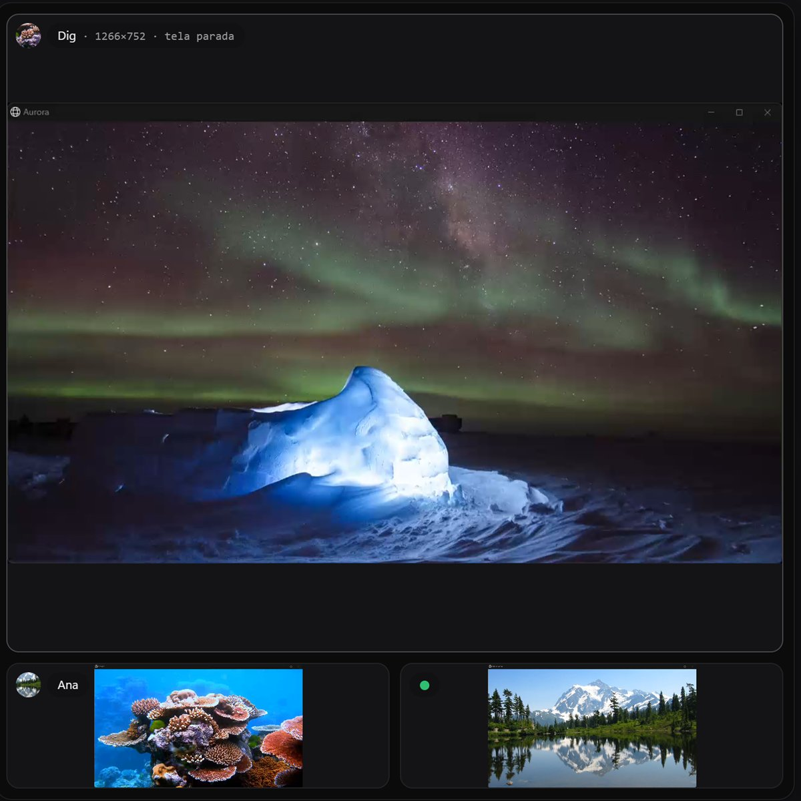
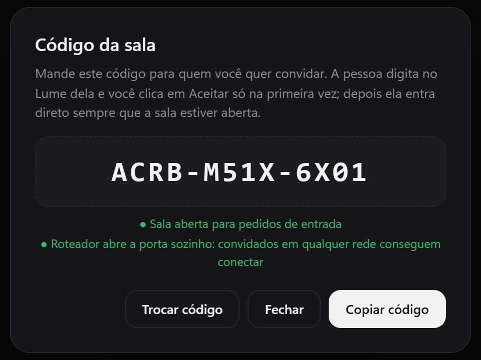
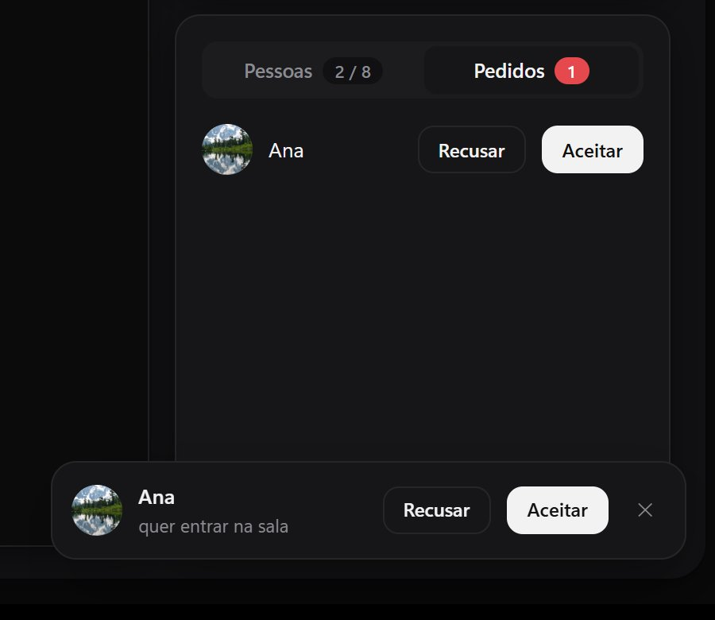
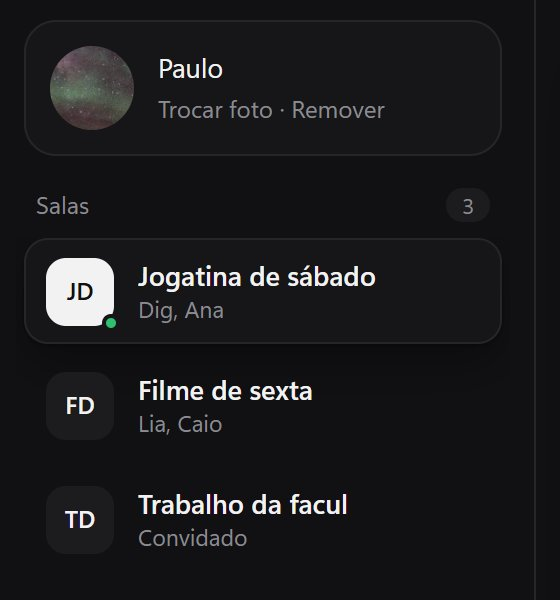
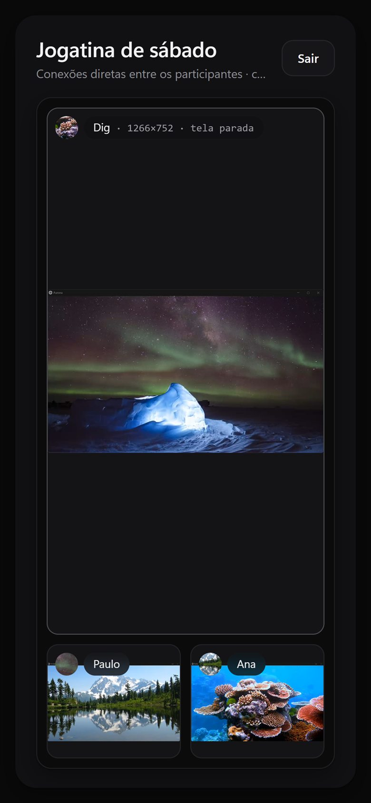

Todo mundo transmite
Clique numa tela e ela vira a principal. As outras descem para a faixa de baixo; duplo clique abre em tela cheia.
Cada tela tem seu volume e seu mudo, e você vê a sua própria transmissão do jeito que os outros recebem.
Um código e pronto
Para começar, você cria a sala e o Lume mostra um código de 12 letras e números. É a única coisa que você manda para os amigos, pelo WhatsApp, pelo Discord ou de boca.

Do outro lado, seu amigo digita o código e você clica em Aceitar. Só na primeira vez: da próxima, ele entra direto sempre que a sala estiver aberta.

Daí em diante, a sala fica salva do lado esquerdo, com quem já passou por ela. Se quem criou a sala sair, quem está há mais tempo assume, e o resto reconecta sozinho.

O que vem junto
Tela
- Telas e janelas
- Sem barra de compartilhando
- Prévia da sua tela
- Grade com destaque
- Tela cheia
- Volume por tela
- Até 12 pessoas
Qualquer pessoa transmite, e cada um escolhe para qual tela olhar.
Som
- Só o som da janela
- PC inteiro, menos a call
- Discord, Teams e Zoom de fora
- Som com pouco atraso
O som certo vai junto, e a voz da call não volta como eco.
Conexão
- Direto de PC para PC
- Abre a porta do roteador
- IPv6
- Qualidade automática
- Reconecta sozinho
- A sala continua sem o anfitrião
Feito para funcionar entre casas diferentes, não só na mesma rede.
Passe o mouse num item para ver o que ele faz.
Medido num PC de verdade
- 0,07
- núcleo de CPU para transmitir em 1080p a 60 quadros por segundo. A imagem vai da captura ao codificador sem sair da placa de vídeo; o jeito antigo gastava 0,80.
- 60
- quadros por segundo também em 1440p, onde o caminho pela CPU não passava de 48.
- 40 ms
- de espera no lado de quem assiste, antes de mostrar a imagem.
- 6,7 MB
- é o programa inteiro: um arquivo, sem instalador e sem conta.
Medições com uma placa AMD Radeon RX 9060 XT, transmitindo uma animação em tela cheia por 10 segundos.

Perguntas
Dá para adivinhar o código?
Não, nem trocando uma letra para cair em outra sala. Cada sala tem um entre mais de um quintilhão de códigos, sorteados pelo sistema. Do código saem o endereço da sala e a chave que cifra o pedido de entrada; uma letra trocada leva a um endereço e uma chave completamente diferentes. E, mesmo com o código certo, quem criou a sala precisa aceitar a pessoa na primeira vez.
- Endereço da sala
- lume2/915548bfc5910d8143ce561e
- Chave
- 74e764e54a677f37f31d756dfbadf0cf3ec09d69e45bf0740febef9c4ca1c5f2
É a mesma conta que o Lume faz, aqui no seu navegador. Ela leva uma fração de segundo de propósito, para que testar códigos às cegas seja inviável.
Alguém consegue ver o que eu transmito?
Só quem está na sala. Vídeo, som e mensagens vão direto entre os computadores, cifrados. Servidores públicos servem só para os dois PCs se encontrarem, e o que passa por eles também está cifrado pelo código. O Lume não tem conta, não coleta nada e o código é aberto.
Funciona no celular?
Para assistir, sim: a versão web abre no navegador do celular ou de qualquer computador, sem instalar nada. Criar salas e transmitir a tela é pelo app no Windows.
E se a conexão não passar?
O Lume abre a porta do roteador sozinho e tenta também por IPv6, e na janela do convite diz se a sua rede está pronta. Se a internet dos dois lados usar CGNAT e nenhum tiver IPv6, a conexão direta não é possível; nesse caso, peça para o outro criar a sala.
Quanto custa?
Nada. O Lume é gratuito e de código aberto, e o código está no GitHub.